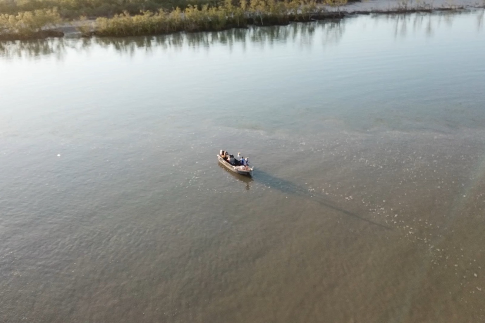
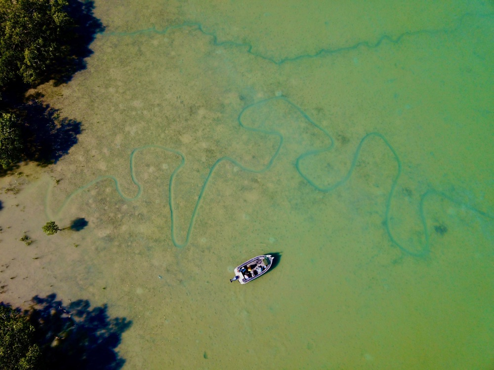

Bag a Barra, Oz Off Road Radio · 3AW / Nine Radio
Friday 11 September 2026

Listen · 8 min
Originally broadcast on 3AW / Nine Radio. Listen on the Bag a Barra, Oz Off Road Radio.
It's time to head to the Top End and Bag a Barra with Glenn Watty Watt. Thanks to Barefoot Fishing Safaris and Uniden, for the best in UHF radio communications. Explore the extract series at uniden.com.au. Well, he's my man in the Top End, although I was in charge there for a couple of weeks, but unfortunately, now that has passed.
But I think he's get on a boat. We've got him fishing, literally. Watty, where are you, son? Oh, yeah, that's right, duck.
Yeah, well, I'm not fishing. I'm working like a dog out here. Oh, well, you're kidding, aren't you? Oh, well, you haven't seen him, mate.
They can be hard work these fellas. Hey, listen, before you tell me about it. Was there a bit of rain up there the other day? Yeah, there's been decent amount of scattered rain.
We haven't had any sort of directly on us in the last week or so, but it did rain. It was a nice band went through Darwin and Palmerston a few days ago and big scattered storms out over the water hasn't been fishing this week. So yeah, it's all happening, mate. It's very steamy every morning and the buildup's here, so it's good.
Yeah, early buildup? Is that early buildup? That's what people were selling me when I was there a couple of weeks ago. Yeah, a couple of weeks ago, probably, you'd probably call it that, but, you know, we're in September now and we, we expect rain in September and um, that water tempt to come up and get everything happening again.
So yeah, it's probably on track and fingers crossed for another big wet season like we had last year. You love the big wet. Everybody I talk to who lives there, loves the wet. They all love it.
Whether I'd survived the wedding, I don't know, Watty, but you can be a judge of that knowing me, but anyway, mate, so where are you? Uh, we're out on uh, um, on a flat in Bynoe Harbour. We're just sneaking along here, fishing a few drains. There's a few barr jumping around.
It's absolute glass weather, beautiful clear skies, a typical buildup morning and that sea breeze you're starting to push in. So last day of 5 today, mate. We've had a pretty good trip and yeah, back into towns north. Yeah, okay.
And have they been biting? Yeah, they have been. Barrett been fairly active and we had some other pretty crazy sessions on the golden snapper and then a blue salmon school to end all salmon schools yesterday, a couple 100 fish that we just couldn't get away from. So that was, that was a heap of fun, um, did a little bit of refishing earlier in the trip too, and put a few in the freezer as well as, um, some over the table at, um, Dundee Lodge, as well as, um, crab claw, boys have stayed at 2 different locations over this trip, so, they get to have a good look around.
Tell us about the crab, crab claw. Yeah, well, Crabcall is right in the middle of Bynoe Harbour, right on the beach, and it's been around for a long time, and yeah, a bit of an institution up here for Bynoe Harbour fishing. I've stayed out here a lot over the years and um, it's really good because you, you know, you can leave your boat in the water or um, or you just right there at the boat ramp every night and watch the sunset over the beach, mate, and the feet of crabs and fish, it's pretty hard to beat. It's just unbelievable.
This is your, and you're telling me you're working? Is that right? That's right. That's right. So I've got my caravan set up at Crabclaw until early December from now on.
So I'll be in and out of here over the next couple of months would be great. It'll be hard to find you, so we're on Starlink, are we? Yeah, that's right. Yeah, there's no service out of you really.
So everyone runs a little white star link out the back of the carban and, you know, we, we, um, we do a fair bit of talking to Euro over the boat, on the boat, over at two, don't we? Yeah, good. How good is Starlink? He's going alright, old Elon, I reckon.
Oh, mate, it's unbelievable. I mean, much a game changer, really. And you are right. You see it everywhere.
I tell you the one thing I've seen, and I was asking this question of many people over the last couple of weeks, but I've literally seen 1000s of caravans on the road, 1000s. Thousands. People are out there, mate. They love it.
love this stuff. Yeah, that's right. Yeah, I mean, it's, it, they probably heading back your way a bit more right now too, because it's thinning out up here a bit. And um, yeah, so I guess that's southern spring and summer starting to kick into gear and everyone will be heading back down to their local yobian holes and fishing spots down further south and leave this nice build-up weather for us.
Yeah, exactly, right? You give the town back to you so you can just fix it all up for us when we get back. I might come back next year, Watty. talk of it.
Yeah, good, good. Let's talk of it. Our calendar is a bit better this time. Yeah, I know.
is talk of it, mate. We're already talking about it. Yeah, go back, go back, might spend a little bit of extended time there, I think. I do love it.
It's good up there. So, mate, you there? Mate, the $1000000 fish. That'll be starting up again soon too, won't it?
Back on again this year? In a few weeks? Yeah, at the end of September. So we're keeping an eye on every barrier that we get at the moment to see if we need to put him in the freezer for a couple of weeks if he's got a...
He haven't come across one yet, mate. You be the 1st one. Don't worry. That's one of your best.
Grab a tag, fish, put him in the freezer and then just produce him and thaw him out and take him in there and pick up your 10K, or your million. Yeah, well, you will notice, you will notice that there's usually a flurry in the 1st week of 3 or 4 fish, mate, so I don't think I'm the only one with that idea, to be honest. Oh, okay. Oh, fair enough.
Anyway, it's a great incentive and a great, a great tourism promotion as well for the wed up there. And a lot of people, mate, I'm not joking. Everybody I spoke to, and I met this fella, um, who was uh, working at the free spirit where he were, who gets out the Daly River Affair bit, and I was actually talking about, knew, he knew of you. He knew of your business anyway.
And he gets onto some traditional land out there. And mate, he just absolutely loves it. And he's another one, loves the wet, everyone I spoke to, he works up there, lives up there. They all love it and they're all looking forward to it. as you are. So happy days.
It certainly is the place to be during the winter months for everybody down here, all us softies who, they like the carl. Well, it is the place to be. You know, they'll run for their lives when it gets too hot. How good is it? Yeah, that's right. That's good.
You got it set up like that, isn't it? Exactly. All right, mate. Well, I'll leave you there.
You've obviously got a few of the boys on the boat. You were telling me earlier that, well, you got a bloke on the boat who was on the boat with you last year. But when we rang out, when we rang out. That's right.
We were in Darwin Harbour and I think one of the fellows added quick yak to you and I caught a barrel while while you were doing that. So, um, yeah, we've had some good trips over the years and um, this one's been another one, so it's nice. Yeah, good stuff mate. All right, mate.
I'll let you get back to it because I know you're working very hard there and so you can catch one for me, okay? Yeah, mate, yeah, you can hear the stress levels are very high, and I'm looking forward to my weekend starting when I get off the war this afternoon. Right there, mate. These weekends are all over the shop, that's for sure.
All right. Talk to you next. Ah, oh, birthday. Yeah, it is my birthday tomorrow.
Thanks. Well done, mate. Happy 50th, mate. Yeah, 26 again.
that's right See you. Right, good on you. Ta-da, mate.
There he is. Thats our man, Glenn, what he, what? You can catch him Barefoot Fishing Safaris. the best in the business in the Top End when it comes to being a fishing guide.
his next level. He knows where to get him, doesn't he? Well, I like the idea of that crab claw. That sounds like a good place.
He's texting me last night telling me he was there. And of course, angling adventures, if you want to take that fishing adventure to another level. But Barefoot Fishing Safaris in the Top End is the go. Our man, Glenn, what do you, what?
been on the show with us now. for quite a few years and he is our man up there in the northern territory Top End. He's across everything that goes on there, not just the fishing, but all the events as well, and that way of life, which is very, very uniquely Australian. The last frontier.
That what I call it. He is our man. Glen, what? Look, look him up, Barefoot Fishing Safaris.